1. Was ist RocketDock?
Hast Du schon mal über die Schultern eines Mac-Benutzers geschaut und die schicke
kleine Leiste mit den Symbolen am unteren Bildschirmrand gesehen? Diese ist bekannt als "Dock".
Für alle die so etwas noch nie gesehen haben: Ein Dock ist eine einfache Leiste die am Rand
Deines Bildschirms liegt mit einem Hintergrundmuster und einer Reihe von Symbolen. Ein
Dock stellt Dir Programme und andere, selbstwählbare Verknüpfungen wohlgeordnet zur Verfügung
und mindert damit das Durcheinander auf dem Desktop. Es funktioniert ähnlich wie die Schnellstartleiste
, deren Symbole auf die Original-Dateien und Ordner verweisen.
Hinweis: RocketDock verschiebt, ersetzt, speichert oder dupliziert keines der Symbole das Du in den Dock ziehst.
Lösche niemals die Original-Symbole!
2. Features
- Fenster in den Dock minimieren
- Echtzeit Fenster-Vorschau in Vista
- Laufende Programme markieren
- Einfache Drag & Drop-Schnittstelle
- Echte Multi-Monitor Unterstützung
- Unterstützt Alpha-blended PNG- und ICO-Symbole
- Weiche Symbol-Zooms und -Übergänge
- Auto-Ausblenden und Popup, wenn die Maus darüber fährt
- Bildschirmposition und -ebene einstellbar
- Völlig veränderbar
- Vollständig transportabel
- ObjectDock-Docklet Unterstützung
- Kompatibel mit Mobydock-, ObjectDock-, RK Launcher-, und Y'z Dock-Skins
- Läuft auch auf langsameren Computern gut
- Unterstützt Unicode
- Unterstützt viele Sprachen und kann leicht übersetzt werden
- Eine freundliche Nutzergemeinde :)
- und das Beste: Es ist GRATIS
3. Minimale System-Anforderungen
- Windows 2000/XP/Vista
- 500Mhz oder schnellere CPU
- 10MB freies RAM
4. Unterstützte Sprachen
Afrikaans, Albanisch, Arabisch, Bengalisch, Bulgarisch, Chinesisch (Kurzzeichen), Chinesisch (Langzeichen), Dänisch, Deutsch,
Englisch, Finnisch, Französisch, Galicisch, Georgisch, Griechisch, Hebräisch, Indonesisch, Italienisch, Japanisch, Katalanisch,
Koreanisch, Kroatisch, Niederländisch, Norwegisch, Persisch, Polnisch, Portugiesisch, brasilianisches Portugiesisch, Rumänisch, Russisch,
Serbisch (Kyrillisch), Serbisch (Lateinisch), Singhalesisch, Slowakisch, Slowenisch, Spanisch, Schwedisch,
Thai, Tschechisch, Türkisch, Ungarisch, Ukrainisch
1. Neue Symbole hinzufügen
Das erste, was die meisten Leute nach der Installation von RocketDock machen
wollen, ist neue Symbole hinzuzufügen. Es gibt verschiedene Wege dies zu bewerkstelligen:
Du kannst einfach mit Hilfe von Drag & Drop Verknüpfungen und Programme in den RocketDock ziehen.
Von so gut wie jedem Platz. Wie Deinem Desktop, einem Explorer-Fenster, der Schnellstartleiste
oder der Startleiste.
Ein anderer Weg Symbole hinzuzufügen, ist, Du klickst mit der rechten Maustaste auf RocketDock
und wählst das "Element hinzufügen" Menü aus.
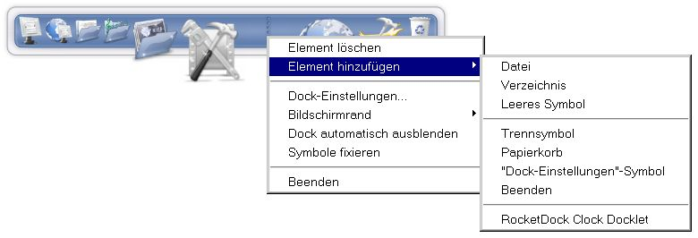
Hier gibt es verschiedene Möglichkeiten. Jeder Menüpunkt fügt einen anderen Symbol-Typ zu
RocketDock hinzu.
Gehen wir alle mal durch:
- Datei: Du kannst jeden Datei-Typ zum
RocketDock hinzufügen. Wenn es angeklickt wird, öffnet es die Datei mit seiner Standard-Applikation.
-
- Verzeichnis: Du kannst jeden Ordner zum RocketDock hinzufügen.
Wenn er angeklickt wird, wird der Ordner im Explorer angezeigt.
-
- Leeres Symbol: Diese Option erstellt ein leeres Symbol,
ein Symbol ohne Symbol-Eigenschaften. Wenn es angeklickt wird öffnet sich automatisch das
"Symbol-Eigenschaften" Fenster, so daß Du selbstständig die Einstellungen konfigurieren kannst.
Das ist nützlich, wenn Du spezielle Symbole hinzufügen willst,
welche keine Dateien oder Ordner sind. Ein Beispiel wäre ein Link zu einer
Webseite.
-
- Trennsymbol: Trennsymbole dienen dazu Deine Symbole in Kategorien einzuteilen
oder einfach eine Lücke zu schaffen.
-
- Papierkorb: Fügt eine Verknüpfung zum Papierkorb ein die auch den vollen oder leeren Stand anzeigen kann.
-
- "Dock-Einstellungen"-Symbol: Das ist ein spezielles Symbol. Wenn Du z.B. das
Dock-Einstellungen-Symbol vom RocketDock entfernt hast, wird diese Option das Symbol wieder
hinzufügen.
-
- Beenden: Fügt ein Symbol ein, welches beim anklicken RocketDock beendet.
-
2. Docklets
Docklets sind wie kleine Programme. Sie erledigen eine bestimmte Aufgabe und laufen in
RocketDock. Es gibt Docklets die den freien Speicher anzeigen oder die aktuelle Wetterlage und vieles mehr.
Du kannst Docklets zu RocketDock hinzufügen, in dem Du sie in den RocketDock
Docklets-Ordner verschiebst. Dieser befindet sich in:
C:\Programme\RocketDock\Docklets (Standard-Verzeichnis)
Nachdem Du das gemacht hast, wird, wenn Du auf die rechte Maustaste klickst und
die "Element hinzufügen" Option anwählst, ein entsprechender Eintrag für jedes Docklet angezeigt,
mit dem Du dieses Docklet in RocketDock einfügen kannst.
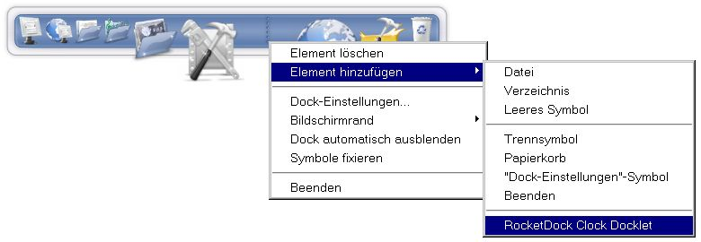
Hinweis: RocketDock hat nur standardmäßige Unterstützung für ObjectDock-Docklets.
3. Symbole konfigurieren
Du kannst auswählen, wie jedes Symbol im RocketDock aussehen soll. Klicke einfach mit der rechten
Maustaste auf ein Symbol, welches Du ändern möchtest und
wähle "Symbol-Eigenschaften...".
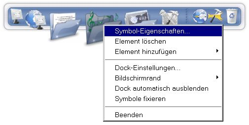
Hier kannst Du das Symbol-Eigenschaften Fenster sehen,
wo Du die Einstellungen der Symbole ändern kannst.
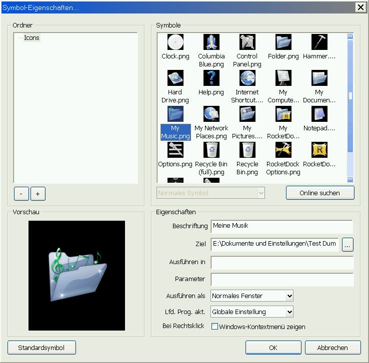
Ordner
Hier kannst Du eine Liste mit allen Ordnern sehen,
die im RocketDock Icons-Ordner enthalten sind. Der Icon-Ordner ist standardmäßig:
C:\Programme\RocketDock\Icons (Standard-Verzeichnis)
Du kannst jedes Symbol in diesen Ordner packen und kannst sie anschließend verwenden. Mit den "-" und "+" Schaltflächen kannst Du Symbol-Ordner entfernen oder hinzufügen.
Auch solche die sich nicht innerhalb des RocketDock-Ordners befinden.
Symbole
Hier werden Dir alle Symbole angezeigt, die in dem in der Ordner-Auswahl angewählten Ordner liegen.
Die Drop-Down Listbox unter der "Symbole"-Anzeige die normalerweise nur "Normales Symbol" (ausgegraut) anzeigt ist zur Auswahl von verschiedenen Symbolen für Einträge die verschiedene Stati anzeigen können. Dies wird meist für den Papierkorb gebraucht der z.B. die Stati "Voll" und "Leer" anzeigen kann.
Vorschau
Hier kannst Du sehen, welches Symbol Du für das aktuelle Element ausgewählt hast.
Eigenschaften
Hier kannst Du den angezeigten Titel, das Ziel und andere Optionen des
ausgewählten Elementes einstellen.
- Beschriftung: Setzt den Titel der erscheint, wenn Du mit dem Mauszeiger
über das Symbol fährst.
- Ziel: Der Pfad der auf das eigentliche Ziel zeigt auf welches das Symbol verweist.
- Ausführen in: Setzt den Ordner in dem das Ziel-Programm ausgeführt wird.
- Parameter: Setzt optionale Parameter die an das Ziel-Programm übergeben werden.
- Ausführen als: Setzt den Fensterstatus indem das Programm oder der Ordner geöffnet werden soll, z.b.
kann das Programm minimiert vom RocketDock aus starten.
- Lfd. Prog. akt.: Erlaubt es die Option "Laufende Programm-Instanzen aktivieren" für jedes einzelne Symbol
zu überschreiben. Die Möglichkeiten sind: "Globale Einstellung" (verwenden) sowie "Immer" und "Nie".
- Windows-Kontextmenü: Hier kannst Du auswählen, ob Du bei einem Rechtsklick die Optionen des
Windows-Kontextmenüs statt dem RocketDock-Kontextmenü für dieses Symbol verwenden willst.
Ein gutes Beispiel ist, wenn Du eine Internet-Verbindung in RocketDock hinzugefügt hast.
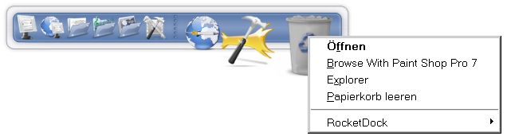
4. Symbole löschen
Du kannst Symbole auf zwei verschiedene Arten löschen:
Die Erste ist, Du ziehst
das Symbol einfach vom RocketDock auf Deinen Desktop. Es wird dann einfach verschwinden.
Die Zweite: Du klickst mit der rechten Maustaste auf das Symbol und wählst im
Menü die "Element löschen"-Option.
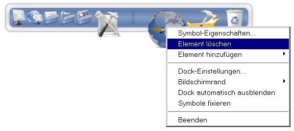
Abstandshalter werden auf dem gleichen Wege gelöscht.
Docklets können nur entfernt werden indem Du
sie auf Deinen Desktop ziehst.
5. Drag & Drop
Du kannst Dateien und Verzeichnisse auf die Symbole im Dock ziehen.
Wenn Du eine Datei oder ein Verzeichnis auf ein Programm-Symbol ziehst, wird die Datei oder das Verzeichnis mit diesem Programm geöffnet wenn das Programm diesen Dateityp unterstützt.
Wenn Du z.b. eine PNG-Datei auf ein Photoshop-Symbol ziehst, dann wird Photoshop gestartet und diese PNG-Datei geladen.
Wenn Du eine Datei oder einen Ordner auf ein Ordner-Symbol im Dock ziehst, dann wird die Datei oder der Ordner in den Ordner kopiert
auf den das Ordner-Symbol zeigt. Jedes Symbol im Dock verhält sich genauso wie dieses Symbol auf dem Desktop.
Wenn Du Dateien oder Verzeichnisse auf den Papierkorb ziehst, dann werden sie gelöscht.
6. Minimierte Fenster
Wenn Du die Option "Fenster in den Dock minimieren" in den Allgemeinen Optionen aktiviert hast, dann erscheinen minimierte Fenster
als Symbole im Dock. Diese Symbole können im Dock herumgezogen werden, aber man kann sie nicht löschen indem man sie auf den Desktop zieht.
In Windows Vista werden die Symbole in Echtzeit-Vorschau angezeigt, wenn Du Desktop-Gestaltung in den Windows Systemeinstellungen aktiviert hast.
Du kannst ein Fenster öffnen oder schließen indem Du mit der Rechten Maustaste auf ein Fenster-Symbol klickst und "Fenster öffnen" oder "Fenster schließen" anwählst. Standardmäßig wird ein Fenster geöffnet, wenn Du einfach auf sein Symbol klickst.
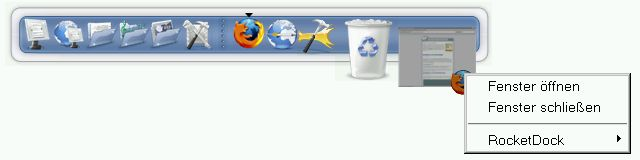
Du kannst permament verhindern das ein bestimmtes Fenster in den Dock minimiert wird indem Du Strg+Alt+Shift gedrückt hältst während Du das Fenster das erste Mal minimierst.
Dies stellt sicher das Dein Media-Player oder Dein Chat-Client in die Taskbar oder den System-Tray minimiert werden, wie Du es gewohnt bist. Diese Einstellung kann rückgängig gemacht werden, indem Du das Fenster nochmal mit derselben Tastenkombination minimierst.
Wenn Du nur einmalig verhindern willst das ein Fenster in den Dock minimiert wird, dann mußt Du nur Strg gedrückt halte während du das Fenster minimierst.
1. Allgemein
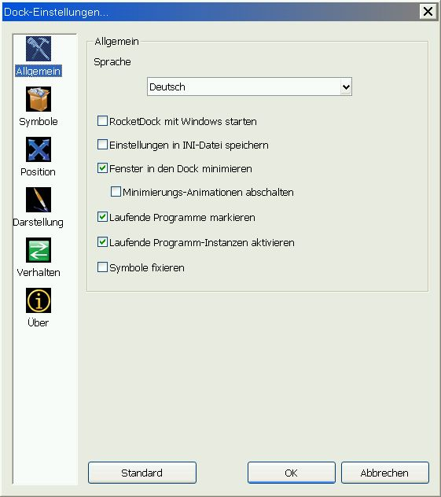
- Sprache: Wähle die Sprache, die RocketDock verwenden soll.
Standardmäßig sollte es die systeminterne Sprache verwenden.
- RocketDock mit Windows Starten: Wähle diese Option, wenn Du willst daß RocketDock
mit Windows startet.
- Einstellungen in INI-Datei speichern: Diese Option erzeugt eine Datei mit dem Namen "settings.ini" im RocketDock Hauptverzeichnis. In dieser Datei werden alle RocketDock-Einstellungen gespeichert, um sie auf tragbaren Geräten wie z.b. USB-Sticks nutzen zu können. Diese Option sollte nicht für den normalen Betrieb von Festplatte genutzt werden, da man unterschiedliche Einstellungen für verschiedene Benutzer damit nicht verwalten kann.
- Fenster in den Dock minimieren: Diese Option lässt minimierte Fenster im Dock erscheinen. In Windows Vista werden die Symbole in Echtzeit-Vorschau angezeigt, wenn Du Desktop-Gestaltung aktiviert hast.
- Minimierungs-Animationen abschalten: Deaktiviert die Animationen beim minimieren und wiederherstellen von
Fenstern die in den Dock minimiert werden. Hilfreich für langsamere Rechner.
- Laufende Programme markieren: Aktiviert eine kleine Markierung die neben einem Symbol erscheint, wenn das dazugehörige Programm läuft.
- Laufende Programm-Instanzen aktivieren: Aktiviert das Fenster eines schon laufenden Programms, anstatt eine neue Programm-Instanz zu starten, wenn man noch einmal auf das Symbol klickt.
- Symbole fixieren: Diese Einstellung sperrt die Symbole, d.h. sie können weder
entfernt noch verschoben werden.
Für schnellen Zugriff genügt es die Steuerungstaste gedrückt zu halten um trotzdem Symbole zu verschieben oder zu löschen.
2. Symbole
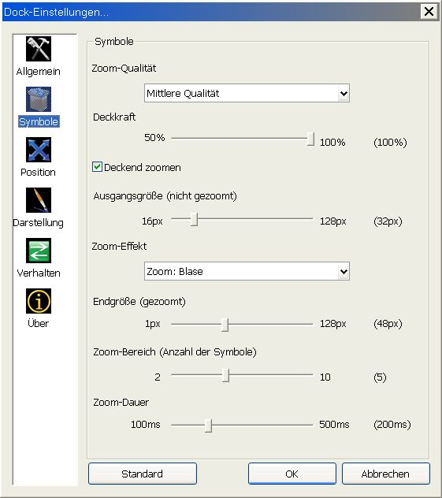
- Zoom-Qualiät: Setzt die Qualität, die der Zoom-Effekt
bei den Symbolen haben soll.
- Deckkraft: Wie transparent sollen die Symbole sein?
- Deckend zoomen: Lässt die Symbole deckend zeichnen, wenn sie gezoomt werden.
- Ausgangsgröße (nicht gezoomt): Setzt die Symbolgröße vor dem zoomen.
- Zoom-Effekt: Stellt ein, wie das Dock und die Symbole gezoomt werden wenn man mit der Maus darüber fährt.
- Endgröße (gezoomt): Legt die maximale Symbolgröße, nach dem zoomen, fest.
- Zoom-Bereich (Anzahl der Symbole): Wie viele Symbole sollen sich vergrößern während des Zoom-
Effekts?
- Zoom-Dauer: Wie schnell (in Millisekunden) soll RocketDock die Symbole
zoomen lassen?
3. Position
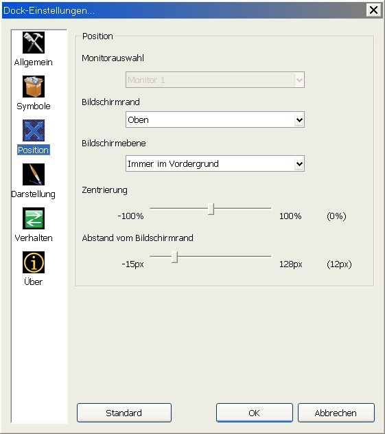
- Monitorauswahl: Wenn Du mehr als einen Monitor angeschlossen hast, kannst Du hier einstellen,
auf welchem RocketDock dargestellt werden soll. Die Einstellung "Monitor *" behandelt alle Monitore, als wenn nur ein einziger vorhanden wäre.
- Bildschirmrand: Wähle, auf welcher Seite Deines Monitors RocketDock
positioniert werden soll.
- Bildschirmebene: Wähle, auf welcher Ebene RocketDock dargestellt werden soll:
"Immer im Vordergrund" bedeutet, daß RocketDock immer im Vordergrund ist.
"Normal" erlaubt Windows, daß Fenster über RocketDock gelegt werden können.
"Immer im Hintergrund" lässt RocketDock immer im Hintergrund verschwinden.
- Zentrierung: Erlaubt es Dir festzulegen, an welcher Ecke des Bildschirms RocketDock positioniert werden soll.
- Abstand vom Bildschirmrand: Du kannst wählen, wie weit RocketDock vom
Bildschirmrand entfernt sein soll.
4. Darstellung
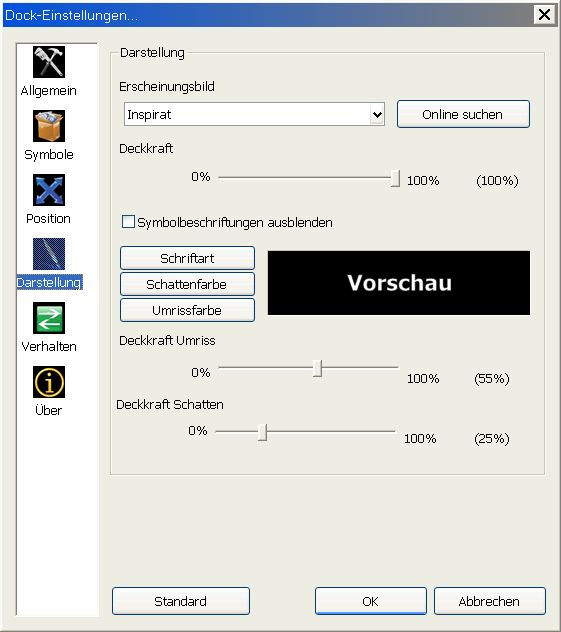
- Erscheinungsbild: Wähle das Skin, daß RocketDock verwenden soll.
Du kannst mehr Skins hinzufügen, indem Du sie in den RocketDock Skin-Ordner packst, der
sich hier befindet: C:\Programme\RocketDock\Skins (Standard-Verzeichnis)
- Deckkraft: Wie transparent soll der Hintergrund sein?
- Symbolbeschriftungen ausblenden: Diese Option deaktiviert die Titel an den
Symbolen, die normalerweise angezeigt werden, wenn Du mit dem Mauszeiger über ein Symbol fährst.
- Schriftart: Wähle Schriftart, -schnitt, -größe und -farbe der Symbolbeschriftungen.
- Schattenfarbe: Du kannst hier die Farbe des RocketDocket
Schattens bestimmen.
- Umrissfarbe: Hier kannst Du die Umrissfarbe von RocketDock
wählen.
- Deckkraft Umriss: Wähle, wie transparent der Umriss
sein soll.
- Deckkraft Schatten: Wähle, wie transparent der Schatten
sein soll.
5. Verhalten
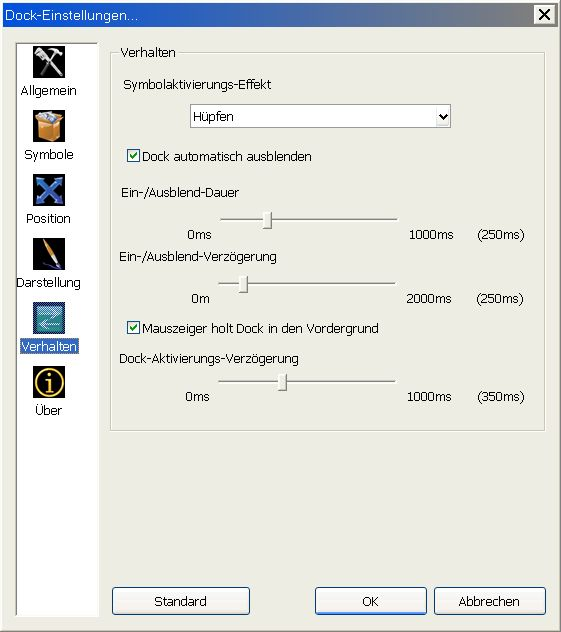
- Symbolaktivierungs-Effekt: Stellt ein wie Symbole animiert werden, wenn sie aktiviert werden. Dieser Effekt wird auch benutzt, wenn ein minimiertes Fenster aktiviert wird, z.b. wenn eine Nachricht in einem Chat-Client eintrifft.
- Dock automatisch ausblenden: Diese Option blendet RocketDock aus, wenn sich der Mauszeiger nicht dort befindet, wo RocketDock normalerweise erscheint (am eingestellten Bildschirmrand).
- Ein-/Ausblend-Dauer: Diese Option setzt die Zeit (in Millisekunden),
für den Ein- und Ausblend-Effekt des Docks.
- Ein-/Ausblend-Verzögerung: Diese Option setzt die Zeit (in Millisekunden),
wie lange RocketDock warten soll, bevor der Ein- und Ausblend-Effekt beginnen soll.
- Mauszeiger holt Dock in den Vordergrund: Das erlaubt RocketDock immer in den Vordergrund
zu springen, wenn der Mauszeiger über das Dock gleitet.
- Dock-Aktivierungs-Verzögerung: Diese Option setzt die Zeit (in Millisekunden) die RocketDock wartet,
bevor es aufpoppt, wenn der Mauszeiger über dem Aktivierungsbereich steht.
6. Schneller Zugriff auf die Optionen
Mit einem Klick der rechten Maustaste über RocketDock bekommst Du schnellen Zugriff auf einige Optionen.
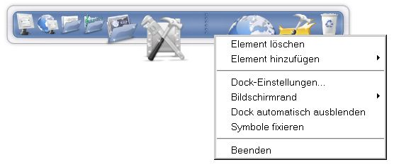
Du kannst zwischen den Bildschirm-Rändern oder den Monitoren wechseln, die Symbole fixieren oder auswählen ob das Dock
automatisch ausgeblendet werden soll. Du findest dort auch eine Verknüpfung zu den Dock-Einstellungen. Ein hinzufügen dieses Symbols zum Dock ist also nicht unbedingt notwendig.
7. Optionen zurücksetzen
Im Dock-Einstellungen Fenster befindet sich in jedem Unterpunkt ein "Standard"-Button, welcher die Standardeinstellungen
vom RocketDock wiederherstellt.
Hinweis: Dies beeinflusst nicht die Auswahl der Symbole.
1. Wenn Du weitere Fragen hast
Wenn Du weitere Fragen zu RocketDock hast, kannst Du einfach unser Forum besuchen. Dort kannst Du auch Tutorials
finden die zeigen wie Du RocketDock weiter verändern kannst.
2. Helfen bei der Übersetzung
Wenn Deine Sprache nicht unterstützt wird und Du bei der Übersetzung helfen oder
die Sprachdateien aktualisieren möchtest, kannst Du hier Instruktionen finden. Wenn Du diese Dokumentation
übersetzen möchtest kontaktiere uns bitte im Forum.
3. Missionieren
Anderen über unsere Software zu erzählen ist ein guter Start uns zu helfen. Links auf uns auf Deiner Webseite
zu setzen ist ein guter Anfang. Du kannst Banner im Forum finden, oder Du schickst uns Deine eigenen.
4. Besuche unseren Shop
Wir haben einen Online Shop, der Punk Software Swag Shack heißt. Du kannst dort Dinge wie
Shirts, Mauspads oder Mützen kaufen die Dir gefallen werden. Ein Teil des Geldes wird genutzt, um die hungernden Punk
Software-Programmierer zu füttern.